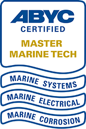

Home
Home
Float Your Boat Again Repair Services is a nationally accredited, licensed, and insured marine repair organization. We are commited to providing our customers with timely and affordable repairs and service. Our customers will attest to our reliability and integrity as marine mechanics. You can bring your boat to us or we can come to you. Yes, we make house calls!
As a proud ABYC Member & Master Facility, our operations ensure high standards of quality and safety. Our personnel are trained in a wide variety of marine equipment and are commited to performing quality work in an industry where reliability and experience have grown increasingly difficult to secure.

© Aimee Koranteng 2024 + 9/28/24